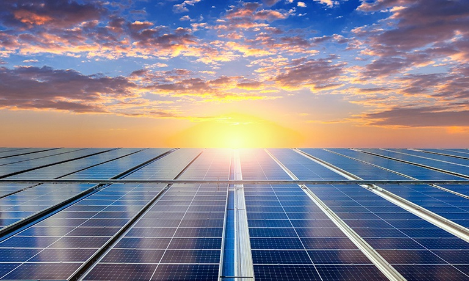

A geração de energia solar é o processo de converter a luz do sol em eletricidade usando tecnologias fotovoltaicas ou térmicas. É uma forma de energia renovável que tem se tornado cada vez mais popular devido à sua sustentabilidade e ao potencial de redução dos custos energéticos. Existem duas principais formas de geração de energia solar: . Energia Solar Fotovoltaica Como Funciona: Painéis Solares: Utilizam células fotovoltaicas (geralmente feitas de silício) para converter a luz solar diretamente em eletricidade. Quando a luz solar incide sobre essas células, ela provoca uma reação que gera uma corrente elétrica. Processo de Geração: Absorção da Luz: A luz solar atinge as células fotovoltaicas nos painéis solares. Geração de Corrente: As células convertem a luz solar em corrente contínua (CC). Inversor: A corrente contínua é convertida em corrente alternada (CA) por um inversor, que é o tipo de eletricidade utilizado nas redes elétricas e nos aparelhos domésticos. Distribuição: A eletricidade gerada pode ser usada diretamente, armazenada em baterias para uso posterior, ou enviada para a rede elétrica. Benefícios: Renovável e Limpa: A energia solar é uma fonte infinita e não emite poluentes. Redução de Custos: Após a instalação inicial, os custos de operação e manutenção são baixos. Flexibilidade: Pode ser instalada em diversas escalas, desde sistemas residenciais até grandes usinas solares. desvantagens: Intermitência: A produção de eletricidade depende da disponibilidade de luz solar, o que pode ser limitado por condições climáticas e pela variação ao longo do dia. Custo Inicial: O custo inicial para a instalação de sistemas solares pode ser alto, embora esteja diminuindo com o tempo.
. Energia Solar Térmica Como Funciona: Coletor Solar Térmico: Utiliza painéis solares térmicos para capturar a energia do sol e convertê-la em calor. Esse calor pode ser usado diretamente para aquecimento ou para gerar vapor que aciona turbinas para produzir eletricidade. Processo de Geração: Absorção de Calor: Os coletores solares térmicos absorvem a radiação solar e a convertem em calor. Transferência de Calor: O calor é transferido para um fluido (geralmente água ou um fluido térmico) que circula através dos coletores. Uso do Calor: O fluido aquecido pode ser usado diretamente para aquecer água, ou o calor pode ser utilizado para gerar vapor em um gerador de eletricidade. Benefícios: Eficiência no Aquecimento: Muito eficaz para aplicações de aquecimento de água e ambientes, especialmente em áreas com alta incidência solar. Menos Impacto Climático: Reduz a necessidade de combustíveis fósseis para aquecimento e água quente. Desvantagens: Espaço e Instalação: Pode exigir uma quantidade significativa de espaço para a instalação dos coletores solares térmicos. Dependência Solar: A eficiência é dependente da disponibilidade de luz solar e pode ser menos eficaz em dias nublados ou em regiões com baixa insolação. A energia solar está em expansão globalmente, beneficiada por avanços tecnológicos e redução de custos, e oferece uma solução promissora para diversificar a matriz energética e reduzir a dependência de fontes de energia não renováveis.
